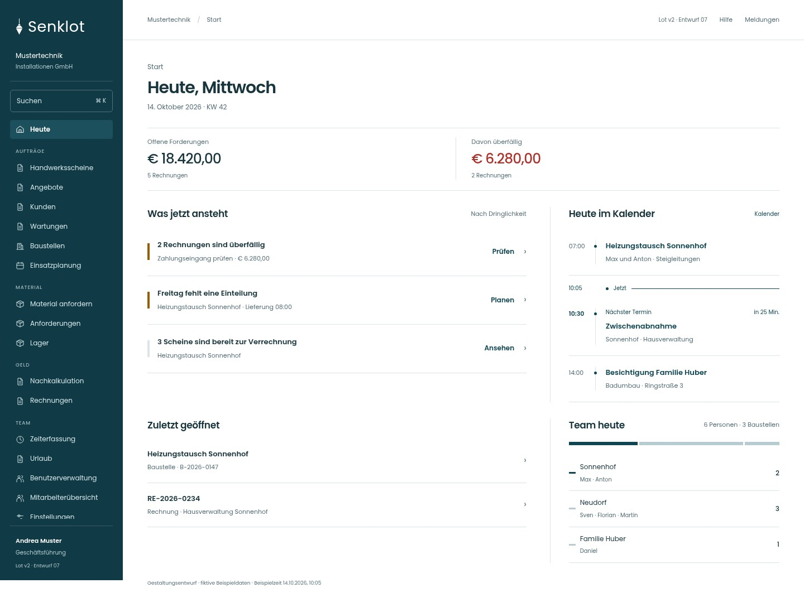
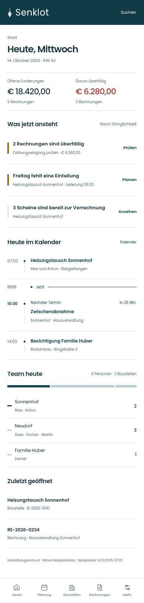

SENKLOT · LOT V2 · ENTWURF 07
Zurückhaltende Typografie, dünnere Zahlen und eine ruhige Zeitachse. Mobil steht der Kalender vor „Zuletzt geöffnet“.


Fiktive Daten · fixe Beispielzeit · Teamband optional · die bestehende App ist unverändert.